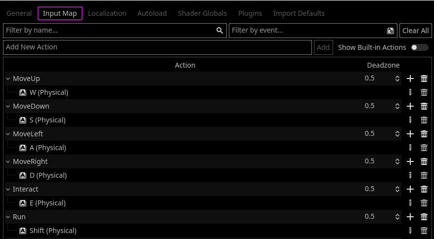
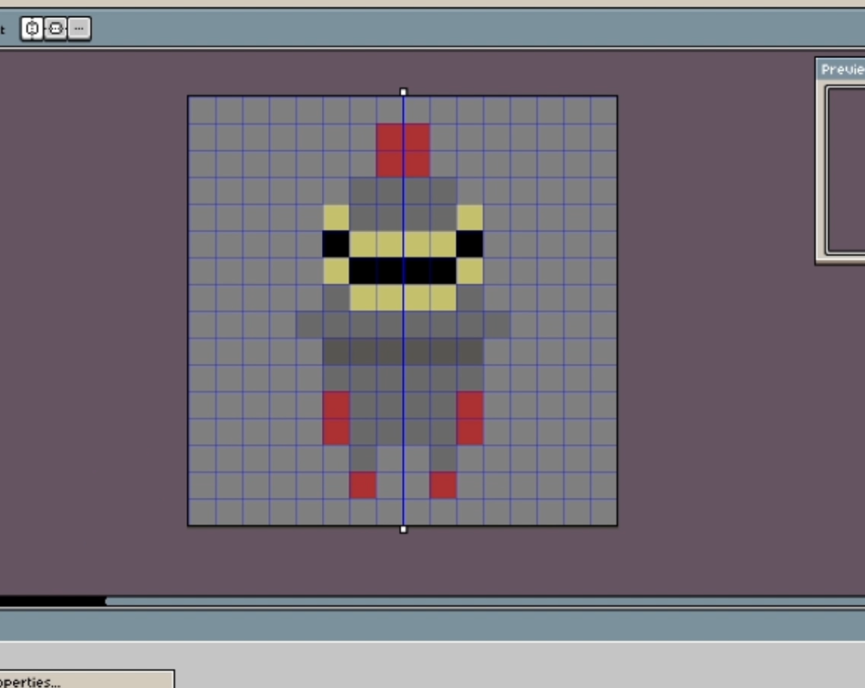

So my first order of buisness was getting player and camera movement down, I made a C# script that would hold all of the player information and functions. After setting up the input buttons using Godot's Input Map feature in project settings, I made a Vector 2 that takes the input axis of the current input and multiplied that vector by the players speed. I also integrated a run mechanic where the player's speed would change if the player presses SHIFT.
Once I got player movement down, I then turned my attention to camera movement. As opposed to childing the camera to the player, I created a C# script that obtained the players position then moved the camera to that position every update. The reason I chose to do this instead is so the camera can maintain it's own Local and Global position.
Initially at the start of this project I told myself to hold off on art assets. This was so that I could pace myself and focus on the priority of finishing script aspects, however I wanted to make my project a teeny bit more presentable in these devlogs, so I made this little sprite of a Knight character. This may not be the final product. I also made a little crossbow for the feature I'm planning for next devlog.
I then imported the sprites into the godot engine and darkened the scene color to be black. With that, I finished player and camera movement.
That is all I did for this devlog, my next goal is working on the crossbow.